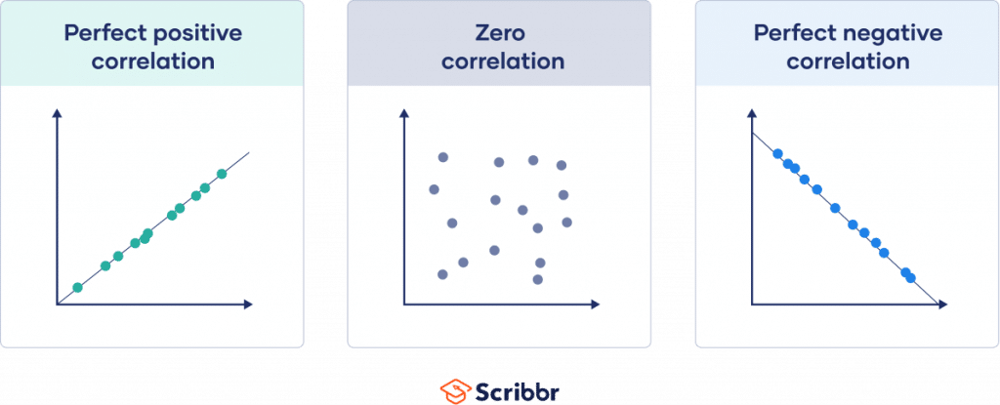

Introducción al Machine Learning
El aprendizaje automático o aprendizaje automatizado o aprendizaje de máquinas (del inglés, machine learning) es el subcampo de las ciencias de la computación y una rama de la inteligencia artificial, cuyo objetivo es desarrollar técnicas que permitan que las computadoras aprendan.
Se dice que un agente aprende cuando su desempeño mejora con la experiencia y mediante el uso de datos; es decir, cuando la habilidad no estaba presente en su genotipo o rasgos de nacimiento. “En el aprendizaje de máquinas un computador observa datos, construye un modelo basado en esos datos y utiliza ese modelo a la vez como una hipótesis acerca del mundo y una pieza de software que puede resolver problemas”.
En muchas ocasiones el campo de actuación del aprendizaje automático se solapa con el de la estadística inferencial, ya que las dos disciplinas se basan en el análisis de datos. Sin embargo, el aprendizaje automático incorpora las preocupaciones de la complejidad computacional de los problemas. Muchos problemas son de clase NP-hard, por lo que gran parte de la investigación realizada en aprendizaje automático está enfocada al diseño de soluciones factibles a esos problemas. El aprendizaje automático también está estrechamente relacionado con el reconocimiento de patrones. El aprendizaje automático puede ser visto como un intento de automatizar algunas partes del método científico mediante métodos matemáticos. Por lo tanto es un proceso de inducción del conocimiento.
El aprendizaje automático tiene una amplia gama de aplicaciones, incluyendo motores de búsqueda, diagnósticos médicos, detección de fraude en el uso de tarjetas de crédito, análisis de mercado para los diferentes sectores de actividad, clasificación de secuencias de ADN, reconocimiento del habla y del lenguaje escrito, juegos y robótica.

Tipos de Machine Learning
Los diferentes algoritmos de Aprendizaje Automático se agrupan en una taxonomía en función de la salida de los mismos. Algunos tipos de algoritmos son:
Aprendizaje supervisado
El algoritmo produce una función que establece una correspondencia entre las entradas y las salidas deseadas del sistema. Un ejemplo de este tipo de algoritmo es el problema de clasificación, donde el sistema de aprendizaje trata de etiquetar (clasificar) una serie de vectores utilizando una entre varias categorías (clases). La base de conocimiento del sistema está formada por ejemplos de etiquetados anteriores.
Aprendizaje no supervisado
Todo el proceso de modelado se lleva a cabo sobre un conjunto de ejemplos formado tan solo por entradas al sistema. No se tiene información sobre las categorías de esos ejemplos. Por lo tanto, en este caso, el sistema tiene que ser capaz de reconocer patrones para poder etiquetar las nuevas entradas.
Aprendizaje por refuerzo
El algoritmo aprende observando el mundo que le rodea. Su información de entrada es el feedback o retroalimentación que obtiene del mundo exterior como respuesta a sus acciones. Por lo tanto, el sistema aprende a base de ensayo-error.
El aprendizaje por refuerzo es el más general entre las tres categorías. En vez de que un instructor indique al agente qué hacer, el agente inteligente debe aprender cómo se comporta el entorno mediante recompensas (refuerzos) o castigos, derivados del éxito o del fracaso respectivamente. El objetivo principal es aprender la función de valor que le ayude al agente inteligente a maximizar la señal de recompensa y así optimizar sus políticas de modo a comprender el comportamiento del entorno y a tomar buenas decisiones para el logro de sus objetivos formales.

Cómo aprende la máquina?
La capacidad de una computadora para reconocer patrones tiene que ver con el problema de optimizar una métrica de desempeño. Por ejemplo, en promedio cuanto me equivoco al tomar una desición.
Para ejemplificar esto, supongamos que nos interesa predecir cuál es el precio de un diamante si conocemos su peso. En el siguiente data set, se recolectó información sobre 54,000 diamantes, la variable price guarda el precio del diamante y la variable carat el peso del diamante.
head(diamonds)## # A tibble: 6 × 10
## carat cut color clarity depth table price x y z
## <dbl> <ord> <ord> <ord> <dbl> <dbl> <int> <dbl> <dbl> <dbl>
## 1 0.23 Ideal E SI2 61.5 55 326 3.95 3.98 2.43
## 2 0.21 Premium E SI1 59.8 61 326 3.89 3.84 2.31
## 3 0.23 Good E VS1 56.9 65 327 4.05 4.07 2.31
## 4 0.29 Premium I VS2 62.4 58 334 4.2 4.23 2.63
## 5 0.31 Good J SI2 63.3 58 335 4.34 4.35 2.75
## 6 0.24 Very Good J VVS2 62.8 57 336 3.94 3.96 2.48#Plot Diamonds
diamonds %>%
ggplot(aes(x = carat, y = price, color = color)) +
geom_point(alpha = 0.4) +
labs(title = 'Price vs Weight')
De acuerdo con el digrama de dispersión, a mayor peso mayor precio. Entonces, podemos concluir que de alguna forma, estas dos variables están relacionadas. Esto nos lo va a decir el coeficiente de correlación.
La correlación entre 2 variables puede computarse como:
\[ \rho = \frac{\text{Cov}(x,y)}{\sigma_x\sigma_y} \]

La correlacion es un indice que va de -1 a 1 en donde \(\rho = 1\) es una correlación perfecta positiva, \(\rho = -1\) es una correlación perfecta negativa y \(\rho=0\) es una correlación nula.
cor(diamonds$price, diamonds$carat)## [1] 0.9215913En este caso la correlación entre precio y peso de un diamante es de 0.92, es fuerte positiva.
Esto nos da la pauta para hacer un modelo estadístico. Vamos a utilizar un modelo de aprendizaje supervisado llamado regresión lineal. La regresión lineal asume que la relación entre precio y peso puede parecerse a una línea recta:
\[ y=\beta_0 + \beta_1x+\epsilon \]
En donde \(\beta_0\) es la ordenanda al origen, \(\beta_1\) es la pendiente de la recta y \(\epsilon\) es un error aleatorio \(NID(0,\sigma^2)\). Al precio la conoces como variable dependiente, \(y\) , y al peso se le conoce variable independiente o \(x\) . Entonces, el problema consiste en encontrar los valore de \(\beta_0\) y \(\beta_1\) que optimicen alguna métrica de desempeño.
¿Qué metrica de desempeño podemos usar?
Una forma muy intuititiva es eligir una métrica que nos diga nuestro grado de error. Es decir, cuanto nos equivocamos al estimar el precio de diamante con su peso. De la ecuación anterior, podemos reescribir:
\[ \epsilon = y - \hat{y} = y - (\beta_0 + \beta_1x) \]
A esta ecuación se le conoce como error de predicción. Si computamos este error para cada punto de los 54,000 tenemos:
\[ \epsilon_i = y_i - (\beta_0 + \beta_1 x_i) \]
Una forma común de representar la función del error es elevando al cuadrado para computar una especie de disperción media
\[ \epsilon_i^2 = \bigg(y_i - (\beta_o + \beta_1 x_i)\bigg)^2 \]
Y ahora simplemente obtenemos el error promedio sobre todo los puntos:
\[ \bar{\epsilon}_i^2 = \frac{1}{n}\sum_{i=1}^n \bigg(y_i - (\beta_o + \beta_1 x_i)\bigg)^2 \]
Y ahora tenemos nuestro primer algoritmo de aprendizaje automático conocido como mínimos cuadrados. Vamos a investigar que pasa cuando fijamos los valores de \(\beta_0\) y \(\beta_1\) con nuestro modelo:
#Create a function
#Si b0 = 0; beta1 = 7000 : 8000
f = function(x, beta = 0, beta1 = 7000){
y = beta0 + beta1 * x
return(y)
}
beta0 = 0
beta1 = 7000
diamonds %>%
ggplot(aes(x = carat, y = price)) +
xlim(0, 3) +
geom_point(alpha = 0.2, aes(color = color)) +
labs(title = 'Price vs Weight') +
geom_function(fun = f, color = 'red', size = 2) +
geom_smooth(method = 'lm', size = 2)## `geom_smooth()` using formula 'y ~ x'## Warning: Removed 32 rows containing non-finite values (stat_smooth).## Warning: Removed 32 rows containing missing values (geom_point).
En rojo se encuentra nuestra recta simulada y en azul la recta que minimiza el error. Vamos a computar el error asumiendo que el valor de \(\beta_0 = -2256.361\) y dando distintos valores a la pendiente \(\beta1\)
beta1 = seq(7000, 8500, by = 2)
beta0 = -2256.361
#Computar el error
MSE = NULL
for(i in beta1){
model = beta0 + i * diamonds$carat
error_sqr = mean((diamonds$price - model)^2)
result = data.frame(MSE = error_sqr, beta1 = i)
MSE = bind_rows(MSE, result)
}
#plot error vs beta1
ggplot(MSE, aes(x = beta1, y = MSE)) +
geom_line(aes(color = MSE), size = 2) +
labs(title = 'Funcion del Error')
Aproximadamente, el valor de \(\beta_1\) que minimiza el error cuadrático es ~7700. Con la ayuda del software, podemos encontrar el valor óptimo con más presición:
m1 = lm(price ~ carat, data = diamonds)
betas = round(coef(m1),2)
paste('El valor de b0 y b1 que minimiza el error es:', betas[1], 'y', betas[2])## [1] "El valor de b0 y b1 que minimiza el error es: -2256.36 y 7756.43"En este caso, la función que estamos minimizando es relativamente sencilla de resolver pero en problemas más complejos, estas funciones son realmente complicadas y requieren del uso de una computadora.